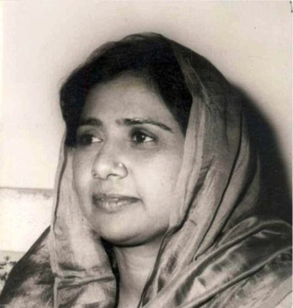

15 january 1956
"We will use Political power as a tool to improve the lives of the people"
Biography
Mayawati was born on 15 January 1956 (Age: 68 Years, as of 2024) in a HinduScheduled Caste family in New Delhi, India. Her father, Prabhu Das, served as a post office employee at Badalpur, Gautam Buddha Nagar, Uttar Pradesh. She completed her education from the University of Delhi and received her B.A. and L.L.B degrees. She completed her B.Ed from...